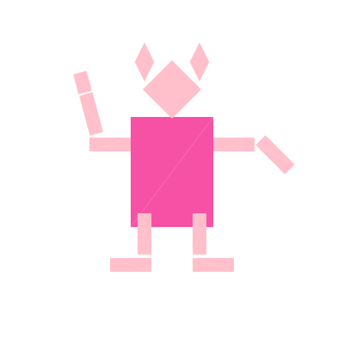

Overview
This is my first time coding in C++ (I have not taken CS61C) and all the concepts taught throughout lectures are new to me. A lot of what was built throughout this homework was related to the rasterization pipeline and learning how to implement sampling (super useful tool!!). This homework was very challenging in different aspects, including myself being new to C++ and having not done math in a while, but I enjoyed the creativity in certain tasks, such as task 3, and how I could see changes in my code being reflected in the draw executable live. If I were to do this assignment again, I would definitely start earlier, but I did try my best to understand every concept thoroughly as I was coding!
Section I: Rasterization
Part 1: Rasterizing single-color triangles
I used the line tests shown in class to rasterize triangles for this question. First, I used the maximum and minimum x and y values of the triangle to form a bounded box around the triangle. I would go through each point of this bounded box and check if it is inside, on the edge, or outside the triangle. To account for whether or not the points were given in clockwise or counterclockwise order, I used the cross product two vectors between the three points to determine the triangle's orientation. If it were clockwise, I would multiply the line function by -1. If it were inside the triangle or on the edge, I would call the fill_pixel function on that point.
Because I do check just the points within a bounded box, it is no worse than an algorithm that checks within the bounding box of a triangle. Below, I attached a png screenshot of test4 with the default viewing parameters showing aliasing. I have also attached screenshots of tests 3, 5, and 6 to show the output!

|

|

|

|
Part 2: Antialiasing triangles
My supersampling algorithm mostly focused on storing the subpixel colors in the the sample_buffer 1D array at consistent indices so that it can be referenced in the resolve_to_framebuffer function when targeting framebuffer pixels. I struggled with this step of the algorithma a lot -- it took me a few drawings, and a lot of debugging, to realize how to index accurately. I made sure that I resized the sample rate and framebufer target proportionally to the sample rate itself in their respective functions.
Supersampling is useful because it takes the average of the colors of the subpixels in a pixel and gives that pixel that average color. Instead of seeing full pixels of just one color, we see more of a gradient (i.e. faded colors near the edge if a pixel is partially colored and partially part of the white background). This reduces the jaggies we see and makes the edges on the shapes look smoother in general. Increasing the supersampling rate is allows a pixel to be divided into smaller subpixels which allows for better blending into the background, reducing the jaggies, and ultimately, antialiasing the triangles.
One thing I changed, or rather ignored, in the rasterization pipeline, was changing anything in the functions that rasterized lines, points, or filled in pixels. Otherwise, I followed the pipeline pretty closely.

|

|

|

|
As shown in the images, the jaggies are very apparent when the supersampling rate is 1 (staircase edges). But as the supersampling rate increases, the edges become more "blurred" with the background, making the edges seem smoother in general.
Part 3: Transforms
I tried to make cubeman resemble Peppa Pig! I changed the colors of all the components of the cubeman -- everything except the torso is a pale pink and the torso itself is a darker pink. I also added ears to the head by rotating to rectangles and transforming them so they are on either side of the head. I also scaled the torso to be longer vertically. I gave Peppa Pig a hand -- she's waving at us!

|

|
Section II: Sampling
Part 4: Barycentric coordinates
Barycentric-coordinates are part of a coordinate system that is useful for interpolating across triangles. A series of weights are expressed as (alpha, beta, gamma), where alpha, beta, and gamma are weights of the vertices of the triangle. These weights should generally sum to 1. I used these weights to calculate the color at each pixel.

|

|
Part 5: "Pixel sampling" for texture mapping
Pixel sampling for texture mapping is useful to apply a color to the texture map given the texture. This is mostly helpful for 3-dimensional images that a computer wants to display (aka when texture is involved). I used 3D vectors to hold the texture coordinates (u and v), which are then used to get the color at that texture coordinate through pixel
There are two main pixel sampling methods: nearest pixel sampling and bilinear pixel sampling. Nearest pixel sampling takes the color of the nearest texture pixel to (u, v) while bilinear pixel sampling takes the average of the colors of the 4 nearest texture pixels to (u, v). Bilinear sampling produces generally higher quality graphics. There would generally be a large difference between these two methods when there is a substantial variation of differences in the texture within a small area: bilinear pixel sampling will generate a more accurate, or higher quality, image as it takes into account a broader range of pixels.

|

|
Unfortunately, I ran into errors when increasing the supersampling rate (it would show a blank graphic).
Part 6: "Level sampling" with mipmaps for texture mapping
Level sampling is a sampling method that takes into consideration the mipmap level -- the level of detail -- that surrounds the sampled pixel. In graphics, there are areas that are closer and occupy many pixels, and there are objects that are further and take up less pixels. It is important to keep this in mind as we don't want to perform to expensive of a computation on objects that do not require as much resolution. I was able to start implementing part of this question (commented out in the function), I think it may be best for me to start working on the 2nd homework now, so I can briefly touch upon how I would implement level sampling for texture mapping in words!
First, I would compute calculate the uv barycentric coordinates of the point (x, y), (x+1, y), and (x, y+1) and store them in a SampleParams object, as instructed on the spec. Then, I would calculate the partial derivatives of the u, v texture coordinates (du/dx, du/dy, dv/dx, and dv/dy) to help me calculate the mipmap level. I These derivatives will tell me how much space each of the u, v coordinates take up with respect to the entire image space. I would use Texture::get_level to get the level by passing the SampleParams object into the function. After I get the mipmap level, I would sample the texture color with this level either through nearest pixel sampling or biliniear pixel sampling, store the color in the sample_buffer and then render the colors onto the framebuffer (while scaling vectors accordingly).
Lastly, I'll touch upon the tradeoffs between speed, memory usage, and antialiasing when selecting different pixel sampling methods, level sampling, or supersampling rate (# of samples per pixel). I'll go over how each selection affects each of the three aspects.
- Pixel sampling methods
- Speed: Fastest out of the three toggles because it extracts information directly from the texture map
- Memory: Lower memory needed because it only extracts from the base level of the texture
- Antialiasing: Not super great
- Level sampling
- Speed: 2nd fastest, because in addition to extracting information from texture map, this method also calculates derivatives of screen space and generates mipmap levels
- Memory: Because it generates more info, this method also requires more memory
- Antialiasing: better than pixel sampling! This method chooses the level of detail per texel
- # of samples per pixel
- Speed: Slowest out of the three -- the more we divide a pixel into subpixels, the longer it takes for the computer to render them at higher resolutions. This is seen in how it takes a few seconds for the graphic to load every time we increase the supersampling rate on .draw.
- Memory: Since a sample buffer is used to store supersampled pixel colors, this method also requires decent memory
- Antialiasing: Best antialiasing power! This method reduces jaggies and creates smoother edges effectively
Section III: Art Competition
If you are not participating in the optional art competition, don't worry about this section!